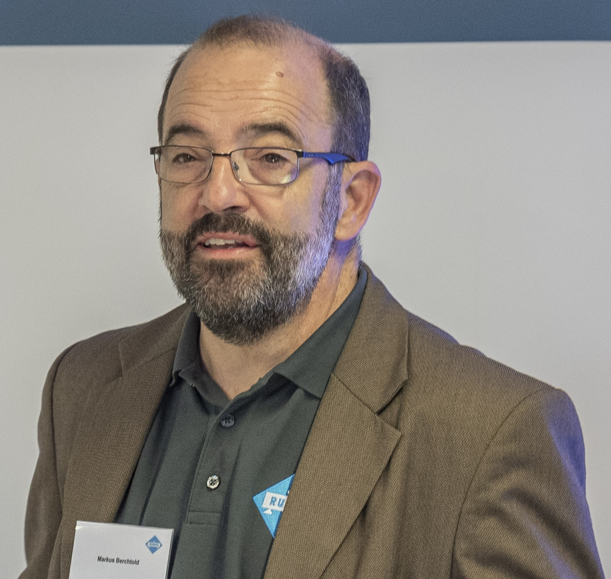

Referentes académicos e industriales invitados al Simposio

Western Michigan University
A polycrystalline alloy is modeled as a 2D meso-aggregate of randomly distributed grains with varying yield strengths. Numerical FEA captures the monotonic and cyclic stress–strain response. The meso-simulations generate distributions of plastic strain (εp) and stress intensity factor (K) at random surface locations, which are then analyzed with respect to the observed fatigue limit and small-crack growth threshold.
A simple methodology for estimating fatigue crack growth (FCG) that incorporates R-ratio effects is proposed. The approach captures both the near-threshold and Paris regimes through an estimated fatigue crack driving force. The proposed model is validated by comparison with experimentally observed R-ratio dependencies of fatigue crack growth behavior and threshold values.

Universidad Nacional de Mar del Plata
In the high-cycle fatigue of metallic components, a relatively large fraction of the total life is required for a crack to be initiated and to grow to a size detectable by inspection. In many cases, up to 80% of the total fatigue life is consumed in the formation of a detectable crack of approximately 1-2 mm. This has historically led to the belief that the crack-initiation stage governs the fatigue life of metallic components. However, this perception arises primarily from the crack length traditionally adopted to define the transition between crack initiation and crack propagation up to final failure, which is generally established from an engineering standpoint as the minimum crack size detectable by available non-destructive inspection methods. Advances in the understanding of the early stages of crack propagation have enabled the development of fracture-mechanics-based methodologies capable of describing and predicting the behavior and growth of so-called small cracks, including cracks with dimensions comparable to the average microstructural size. This progress allows the transition crack length between initiation and propagation stages to be reduced substantially to values on the order of a few tens of micrometers. As a consequence, in most cases the crack-propagation stage is found to account for up to 80% of the total fatigue life, and its analysis even enables the estimation of complete and conservative -N curves for a given metallic component. The fracture-mechanics methodology that enables this type of analysis, along with the essential underlying concepts, is introduced here. The additional complexities associated with the analysis of small cracks are also discussed, as their behavior is considerably more complex than that of conventional long cracks described by the classical Paris-Erdogan law. Finally, the potential of these advanced approaches is demonstrated through representative application examples.
TThe growing emphasis on reliability and safety in mechanical components used in industrial applications is reflected in the increasing need for predictive approaches to assess high-cycle fatigue behavior. Recent advances in fracture mechanics have significantly improved the capability to estimate fatigue life and endurance limits, particularly in components containing small cracks or manufacturing-induced defects. In manufacturing methods such as additive manufacturing, these inherent defects are often capable of eliminating the crack-initiation stage, thereby accelerating the fatigue process. As a consequence, the evolution of fatigue damage is predominantly governed by crack propagation from critical defects up to final failure. In this work, recent advances in the understanding of the fundamental structure of conventional -N curves for materials or components containing small defects larger than the average microstructural dimension are reviewed, and the benefits and capabilities of fracture-mechanics-based methodologies in capturing specific fatigue phenomena are highlighted. A novel approach grounded in fracture mechanics principles, in which K/Kth vs. N curves are proposed for fatigue resistance assessment, is also examined. It is further shown how the fracture-mechanics-based approach enables more detailed and reliable predictions of minimum strength associated with complex combinations of defects, loading conditions, and material properties, which can be complemented by appropriate statistical analyses related to defect distribution and size effects.

CEO, Material2 – Representante RUMUL USA
High-cycle fatigue (HCF) data are a critical input for modern product development, where increasing performance demands leave little tolerance for safety margins. However, the assessment of fatigue strength is still predominantly based on statistical methods developed prior to the availability of modern computational resources. Conventional approaches such as Dixon–Mood or lifetime–stress regressions require arbitrary definitions of acceptable durable load levels as a percentile of the load capacity distribution. The presented Fatigue Limit Model, a five-parameter numerical formulation, describes the load–life relationship while capturing a failure-free load threshold and load-dependent scatter behavior throughout the HCF range. Bootstrap simulations have been used to assess accuracy and test effort for various testing strategies. The combination of “Pearl-String Planning Approach” with the 5-parameter “Fatigue Limit Model” provides an optimum output also considering the ease of implementation in research as well as typical industrial applications.

RUMUL, Russenberger Prüfmaschinen AG
The increasing availability of advanced and precise simulation models, such as digital twins, for
assessing the mechanical integrity and lifetime of components and entire mechanical systems
necessitates highly accurate input data. Reliable and statistically verified fatigue and fracture
mechanics data are essential, particularly when materials are subjected to extreme loading
conditions. This requirement is further emphasized by the observation that “there is no infinite
fatigue life in metallic materials,” as stated by Claude Bathias. Fatigue results for a very high number
of load cycles are essential to ensure reliable lifetime assessments, especially in safety-critical
applications and for emerging materials like those produced via additive manufacturing or composite
technologies.
Resonance fatigue testing machines represent a highly efficient solution for generating fatigue data
quickly and cost-effectively. Operating at high testing frequencies with minimal energy
consumption—comparable to that of a light bulb—and without wear parts, these machines offer
exceptionally low running costs. The system is excited at its resonant frequency using an
electromagnet, analogous to a child on a swing, where nearly all elastic deformation energy is
returned to the system. Only the energy dissipated through damping effects, such as plastic
deformation or wear, needs to be feed into the system.
This work explores various applications of resonance fatigue testing machines, including fatigue
testing of material samples, welds, components, fatigue crack growth tests, and pre-cracking of
fracture mechanics specimens. The quality and reliability of the generated fatigue data are
paramount; thus, critical factors for test planning, sample preparation, design, and manufacturing
are summarized. Key design features of suitable fatigue testing machines are discussed to ensure
precise force measurement and control, accurate consideration of dynamic effects, and minimization
of bending stress.
RUMUL has developed a comprehensive portfolio of resonant fatigue testing machines, ranging from
5 kN to 750 kN, featuring unique design elements such as the compact CRACKTRONIC with torsional
drive and the high-load VIBROFORTE with bipolar dynamic drive. The 50 kN GIGAFORTE machine,
operating at 1000 Hz, is also highlighted.
Particular attention is given to the VIBROFORTE 500 kN machine installed at the National University
of Comahue in Neuquén, Argentina.
Finally possible frequency effects are discussed, since we should not be ignorant about the relevance
of the generated data for the foreseen application.